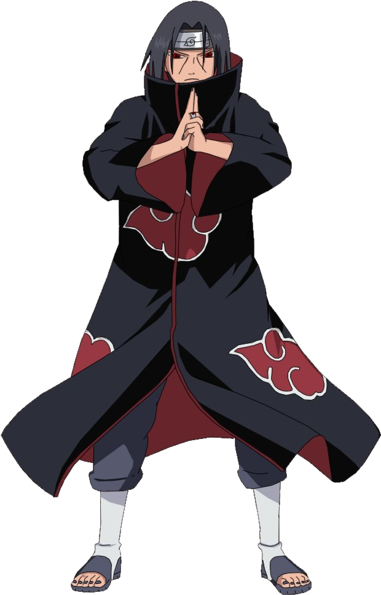
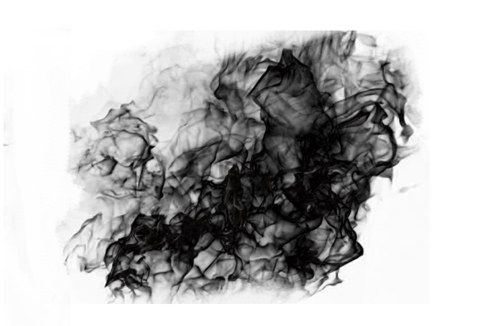

Itachi

1. Mangekyō Sharingan

-
By awakening the Mangekyō Sharingan, Itachi gained access to three legendary techniques:
-
Tsukuyomi
-
A genjutsu that traps opponents in a world where Itachi controls time and space, allowing him to torture them in seconds.
-
Amaterasu
-
Black flames that burn anything in their path and never extinguish until the target is completely destroyed.
-
Susanoo
-
A massive chakra warrior that grants nearly invincible offense and defense.
2. Susanoo (須佐能乎)

-
Itachi’s Susanoo was unique due to its two legendary weapons
-
Yata Mirror
-
A shield that nullifies all attacks, making his Susanoo nearly indestructible.
-
Totsuka Blade
-
A spiritual sword that seals anything it pierces into an eternal genjutsu, preventing resurrection.
3. Amaterasu (天照)

-
Black flames that ignite at the user's focus point and continue burning until the target is completely destroyed.
Itachi’s control over Amaterasu was exceptional, allowing him to focus the flames and even put them out at will.
4. Tsukuyomi (月読)